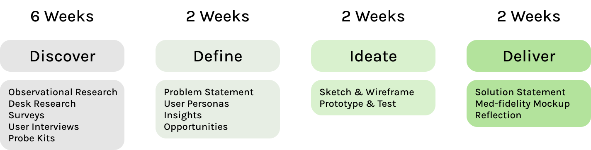
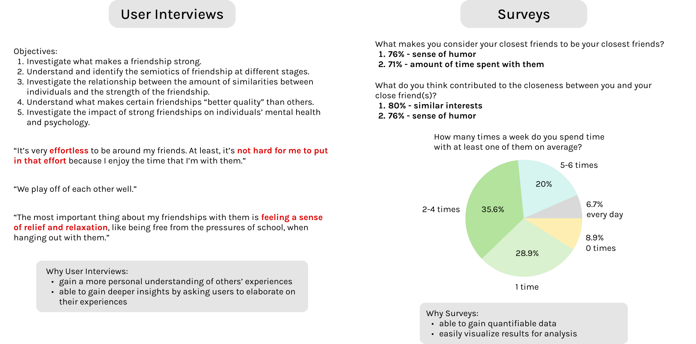
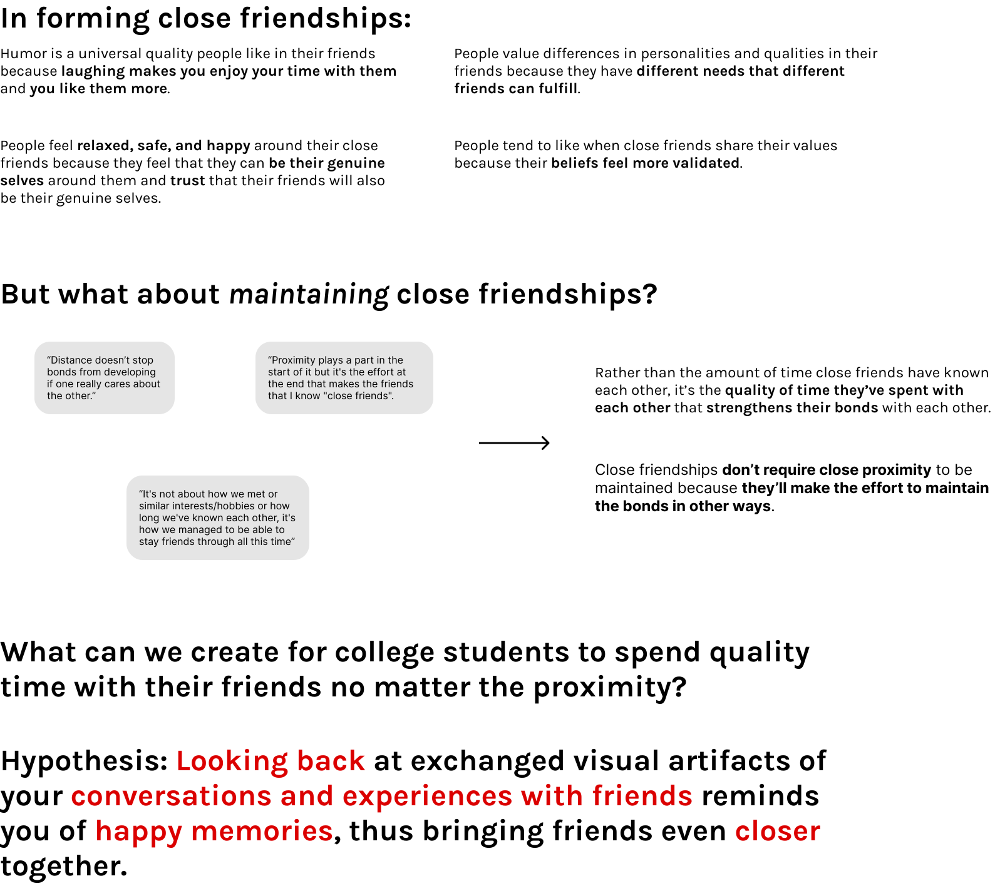
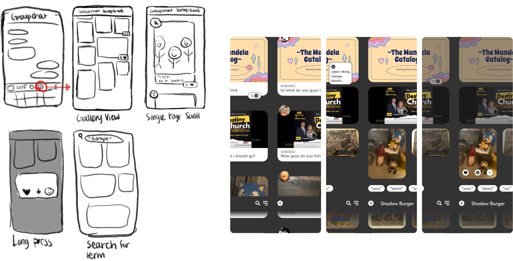
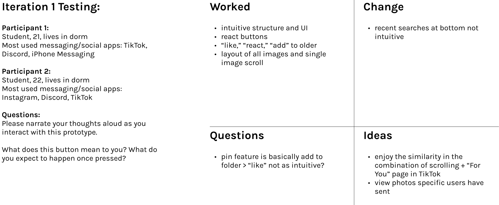
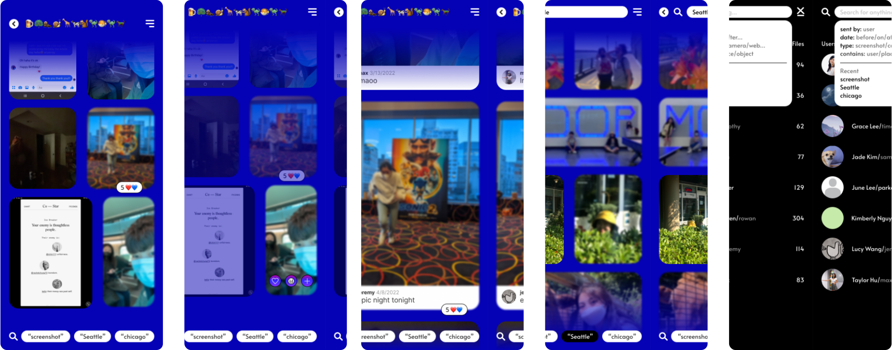
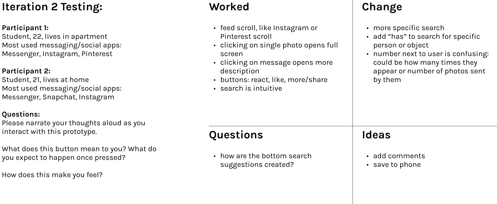
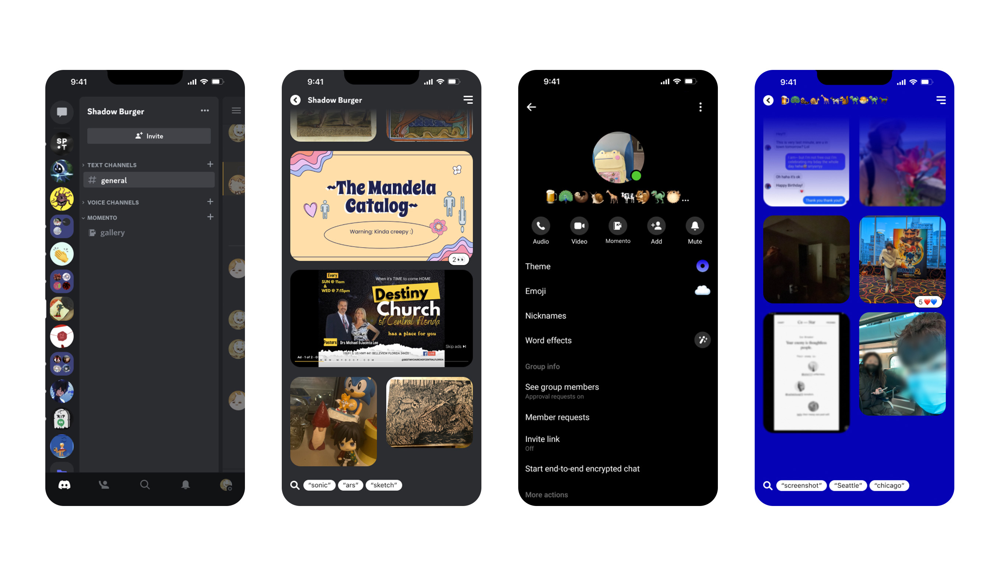
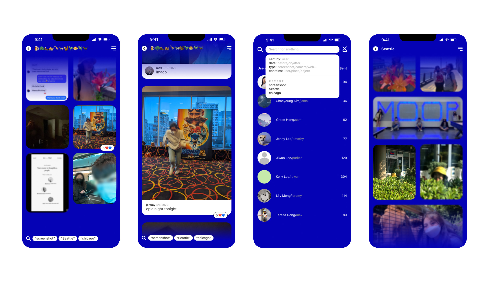

Understanding how to foster closer friendships in college.
The overarching research topic for my class was “relationships,”
and I chose the domain of friendships during college. For many,
college is the next big step in their life, with multiple
variables constantly changing around and within them, thus begging
the questions: why are some people still good friends with their
high school friends while others are not? Why do we have certain
friends that we still consider friends even if we contact each
other only once in a while?
approach
Over the course of 12 weeks, I followed the human-centered design
approach with clear discovery, defining, ideation, and delivering
phases.

discovery
During my discovery phase, my research consisted of desk research,
observational research, user interviews, surveys, and lastly,
probe kits. I wanted to ensure I had a wide variety of research
from various angles in order to better understand what close
friendships looked like, how they formed, and how they were
maintained.

define
To synthesize my findings, I affinity mapped datapoints,
synthesized them, and deduced insights and opportunities. I also
created user personas and mindset mapped them to gain a visual
overview of the spread of my target demographic.

ideate
As the problem is maintaining current friendships rather than
establishing new ones, I felt that it would be counter-intuitive
to introduce a new platform or method rather than strengthen
current ones that are used within friendships. Thus, I sketched
out and tested my idea, Momento, an extension available in current
messaging apps that collects images, files, and videos sent to
create a curated and interactive Pinterest board. This idea
stemmed from my probe kit, as it seemed participants greatly
enjoyed collecting and creating photo collages of their past chat
logs.
I did two iterations and tested each iteration, improving each
based on the feedback grid I made from their comments.




hi-fi solution
For my hi-fidelity solution, after two rounds of testing, I
concluded that Momento indeed functions best as an extension
within social media and messaging apps, as participants in each
group chat responded favorably to the core features and
familiarity of the mockup in relation to the platform. In this
way, the memories are truly custom to each group chat and situated
within the context of the memories and history of the group chat.
Below are two mockup examples on Discord and Facebook Messenger.


By allowing group chats to easily collect and view past sent
images and files with the context attached, users are able to
recall memories and experiences fondly, bringing back the emotions
and feelings they felt at the time while also feeling the urge to
create new memories than can be looked on in the future.
reflection
From this project, I learned a lot about conducting user research
empathetically and effectively, as well as how to phrase questions
or tasks to receive unbiased feedback. It was also generally
enjoyable to read people's comments and reminiscing of their
friendships, especially as I was uncovering new insights that made
sense but I hadn't consciously thought about before.
If I were to redo this project, I would spend more time conducting
research specifically in how current close friendships are
maintained. I recognize that that is a blind spot in my research,
as I spent a lot of time investigating and establishing a standard
of what close friendships looked like without allotting the same
time to maintaining them. I also would have liked more time to iterate in the actual UI design, as the majority of my time was devoted to researching and testing.